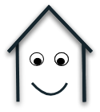
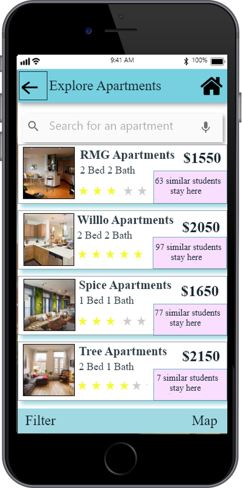
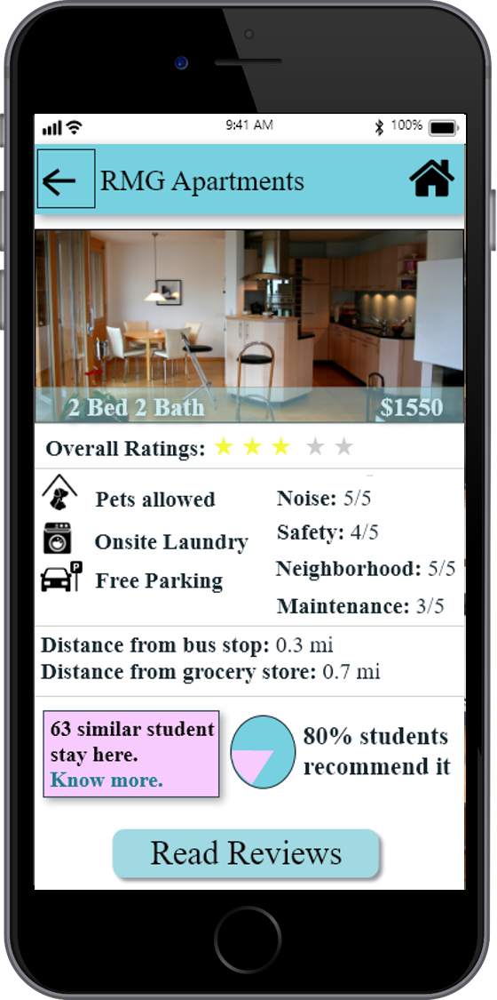
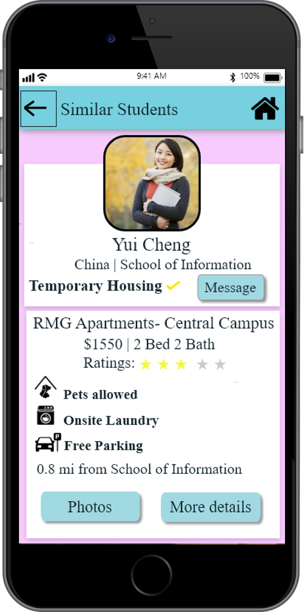
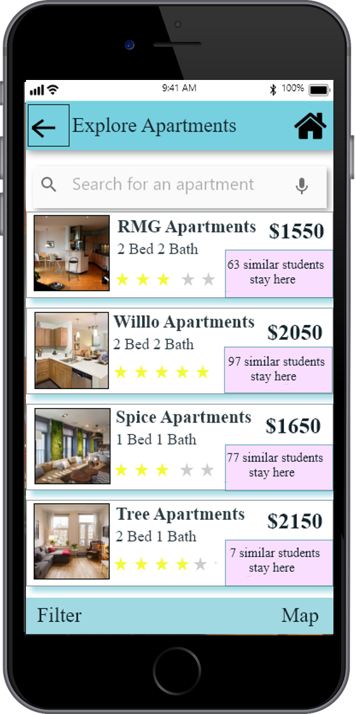
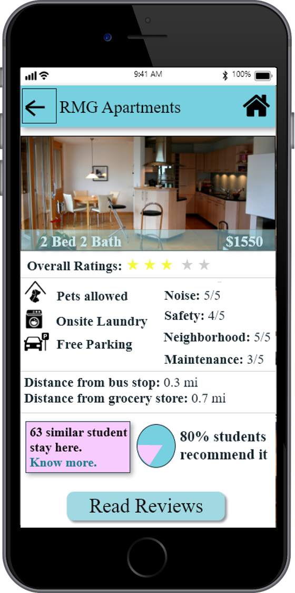
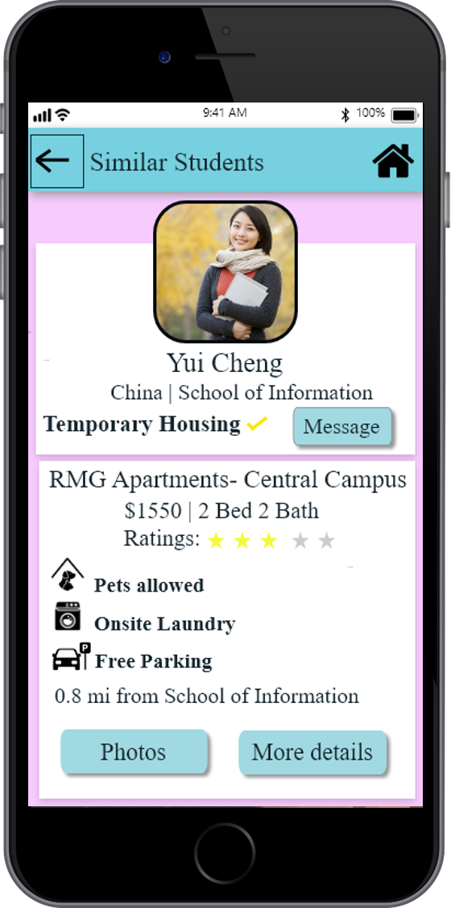

AptAid

 





 Summary
Summary
AptAid is an app that aims to provide a support system to improve the reliability of the apartments that the students are planning to rent using online resources. The main focus of the app is:
- To connect the apartment seekers to students similar to them based on country and school already staying in the apartments
- Provide detailed review of the apartments by similar students
- Provide option of searching for temporary house which will enable students to find an Apartment after arriving in Ann Arbor
This app is mainly designed considering the specific needs of the students like distance to school, noise factor and provide flexibility for the students to use any of the focus areas to support their apartment finding process and inhibit the user to rent out the apartment with full confidence avoiding unnecessary apartment problems after arriving in Ann Arbor.
Check out the digital prototype: click here
 Problem
Problem
Ann Arbor being a university town leads to many students moving in at the same time making it really hard to find an apartment after coming here giving international and out-of-state students the only option of booking apartments online. Although there are many online resources available for apartment hunting the authenticity of the apartment is known only after visiting the apartment personally. No reliable online resources and no direct access to people staying in Ann Arbor make it difficult for incoming students to search an apartment meeting their needs.
 Team
Team
Individual
 Design Process
Design Process
 Market Research
Market Research
The competitive analysis really helped me in understanding how my problem was a serious one and how the current solutions didn’t address it completely.
 Initial User Research
Initial User Research
From user research , it was found that students generally seek advice from students from their same country or school living in Ann Arbor or read online reviews before booking an apartment. But all these sources are not reliable making students choose a wrong apartment. I also designed a survey to reach more users. Some of the questions in the survey along with the reports are as follows:
Sketching
After understanding the problem in depth I started brainstorming ideas in search of possible solutions. I started sketching possible approaches and came up with 8 different solutions. The visual form of sketching really made me understand each solution in better depth and was really helpful in understanding the downfalls in some of the solutions.
 Storyboarding
Storyboarding
Sketching was a good technique to visualize the solution but storyboarding was important to understand how a user would use this particular solution in a specific scenario. This was really helpful in narrowing down some of the important solutions and coming up with the best solution
Understanding the user flow through Storyboarding made me realize that the initial solution of making a second-year student find an apartment physically for the new student that I had come up through sketching was irrelevant.
User Interviews and Brainstorming
I met users once again and this time showed them my storyboards to know about their opinion on my solutions. Along with that in-class Brainstorming acitivity and QOC diagrams were really helpful to finalize my solutions.
 Personas
Personas
I created personas and anti-personas which were a great reference for checking if my solution was actually addressing the users' needs and I wasn’t going off track.
Paper Prototype
Low fidelity prototype was the best technique to get user feedback. It gave the feel of the final app and as it was a low fidelity one, it was really easy to make changes.
Usability Testing
After creating the paper prototype I tested my prototype with the users and got valuable feedbacks that lead me to create the best version of the digital prototype solving the problem in all possible ways.
Digital Prototype
I created the prototype using Adobe XD as I wanted to try out a software which was comparatively new. Usability testing led me to start my application with apartment search rather than just providing information of similar students the way I had designed in my Paper prototype.
The entire design process was very helpful to design the best version of my application.
Takeaway
It was a great experience working on a problem which was dear to me. The users were really happy with the digital prototype that I presented to them. As I desgined the digital prototype using Adobe XD it had some limitations in comparioson to Sketch. But I had a great time designing ach and every minute icon giving the design of the application an original touch.